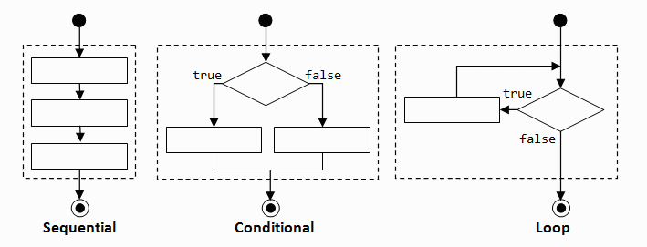
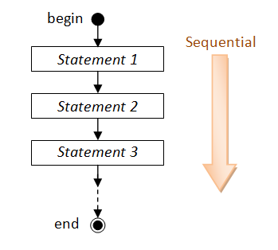
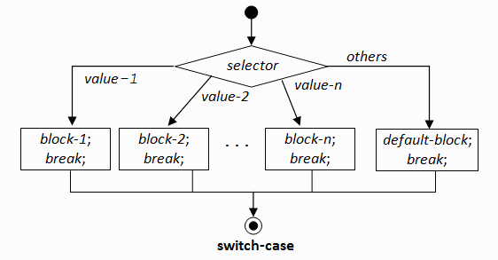
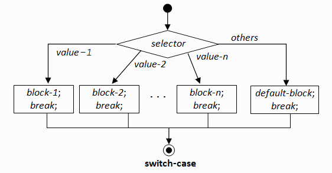
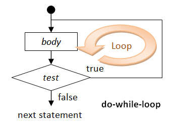
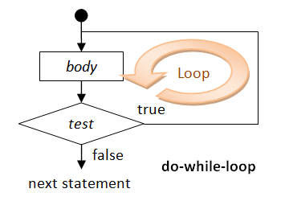

Java Programming
Java Basics
This chapter explains the basic syntaxes of the Java programming language. I shall assume that you could write some simple programs (otherwise, read "Introduction To Programming").
Revision
Below is a simple Java program that demostrates the basic program constructs, such as sequential flow, for-loop, and if-else. Read "Introduction To Programming" if you need help in understanding this program.
1 2 3 4 5 6 7 8 9 10 11 12 13 14 15 16 17 18 19 20 21 |
/* * Sum the odd and even numbers from 1 to an upperbound */ public class OddAndEvenSum { // Save as "OddAndEvenSum.java" public static void main(String[] args) { int sumOdd = 0; // For accumulating odd numbers, init to 0 int sumEven = 0; // For accumulating even numbers, init to 0 int upperbound = 1000; // Sum to this upperbound for (int number = 1; number <= upperbound; number++) { if (number % 2 == 0) { // even sumEven += number; } else { // odd sumOdd += number; } } // Print the results System.out.println("The sum of odd numbers is " + sumOdd); System.out.println("The sum of even numbers is " + sumEven); System.out.println("The difference is " + (sumOdd - sumEven)); } } |
The sum of odd numbers is 250000 The sum of even numbers is 250500 The difference is -500
Comments
Comments are used to document and explain your codes and logic. Comments are not programming statements and are ignored by the compiler, but they are crucial for others to read and understand your program (and also to yourself three days later). You should use comments liberally to explain important as well as salient concepts. During program development, instead of deleting a chunk of statements permanently, you could comment-out these statements so that you could get it back later, if needed.
There are two kinds of comments in Java:
- Multi-line Comment: begins with a "
/*" and ends with a "*/" and can extend for more than one lines. - End-of-line Comment: begins with "
//" and lasts until the end of the current line.
White Spaces & Programming Style
Blank, tab and new-line are collectively called white spaces. Java, like most of the computer languages, ignores extra white spaces. That is, multiple contiguous white spaces are treated as one white space.
In Java, tab is denoted as \t, and newline is denoted as \n.
Proper indentation (with tab, blank and new-line) greatly improves the readability of the program, which is extremely important for others (and yourself) to read and understand your programs. But it has no computational significance.
Alignment of the beginning and ending braces: Place the beginning brace at the end of the line, and align the ending brace with the start of the statement.
Identation: Ident the body by 3-4 spaces. I personally uses 3 spaces.
Refer to the above example for the proper programming style.
Statements
A programming statement performs a piece of action. A programming statement must be terminated by a semi-colon ";". For examples,
// Each of the following lines is a programming statement, which ends with a semi-colon ';'.
int number1 = 10;
int number2, number3=99;
int product;
product = number1 * number2 * number3;
System.out.println("Hello");
You could group several statements into a block surrounded by braces { }. All the statements inside the block is treated as one unit. Blocks are used as the body
in constructs like class, method, if-else and for-loop. There is no
need to put a semi-colon after the closing brace to end a block. For
examples,
// Each of the following lines is a complex statement comprising one or more blocks.
// No terminating semi-colon needed after the closing braces.
// Note that they are usually written over a few lines for readability.
if (number > 88) { System.out.println("Got it"); } else { System.out.println("Try Again"); }
for (int i = 1; i < 100; i++) { System.out.println(i); }
while (i < 8) { System.out.println(i); i++; }
public class Hello { statements }
public static void main(String[] args) { statements }
Variables
A variable is a named storage location that store a value of a particular type. It is called variable because you can change the value stored by assigning (and re-arranging) different value into it.
A variable is identified by its name (or identifier) and is associated with a type (such as int for integer, double for floating-point number, and String for texts). A variable must be declared with a name and a type, before it can be used in the program. Once the type
of a variable is declared, it can only hold a value of that particular
type, and NOT value of the other types. For example, an int
(integer) variable can hold only an integer value, and NOT a
floating-point number or a text string. You can declare a variable (name and type) anywhere in your program, as long as it is declared before it is being used. You can only declare the same variable once.
An identifier is needed to name a variable (or any other entities such as method, class or package). Java imposes the following rules on identifiers:
- An identifier is a sequence of characters, of any length, comprising letters
(a-z, A-Z), digits(0-9), underscore '_', and dollar sign '$'. - White space (blank, tab, new-line) and other special characters (such as
'@','-','&', etc.) are not allowed. - The letters are case-sensitive.
- An identifier must begin with a letter or underscore. It cannot begin with a digit. Identifiers begin with "
$" are reserved for system-generated entities. - An identifier cannot be a reserved word or literal (e.g.,
class,int,if,then,for,true,false).
Variable Naming Convention: A variable name shall
be a noun, made up of one or several words. The first word is in
lowercase, while the remaining words are initial-capitalized (called camel-case). For example, thefontSize, roomNumber, xMax, yMin, xTopLeft and thisIsAVeryLongVariableName. You should not use underscore ('_') or dash ('-')
to join the words. It is important to use a name that closely reflect
the meaning of the variable, instead of meaningless names like i, j, k, i1, j99.
You should use the singular and plural nouns prudently to differentiate
between singular and plural variables. For example, you may use
the variable row to refer to a single row and the variable rows to refer to many rows.
For constants, the name shall make up of words in uppercase and joined with underscore. For example, MAX_INTEGER, MIN_DOUBLE.
The syntax for declaring variables is as follows:
| SYNTAX | EXAMPLE |
|---|---|
// Declare one variable of the specified type type identifier; // Declare more variables of the same type, separated by commas type identifier-1, identifier-2, ..., identifier-n; // Declare one variable and assign an initial value type identifier = value; // Declare more variables with initial values type identifier-1 = value-1, ..., identifier-n = value-n; |
int option; double sum, difference, product, quotient; int magicNumber = 88; String greetingMsg = "Hi!", quitMsg = "Bye!"; |
Java is case-sensitive. A rose is NOT a Rose, and is NOT a ROSE.
Literals
A literal is a fixed value, e.g., 123, 3.1416, "Hello", that can be assigned to a variable.
Expressions
An expression is a combination of operators (e.g., +, -), operands (variables or literals), and sub-expressions, that can be evaluated to yield a single value of a certain type. For example,
1 + 2 sum + number (number1 + 35.61) * number2 / number3
Assignment
An assignment statement assigns a literal value to a variable; or evaluates an expression to obtain the resultant value and assign the value to a variable. The syntax for assignment is:
| SYNTAX | EXAMPLE |
|---|---|
// Assign the literal (RHS) to the variable (LHS) variable = literal-value; // Evaluate the expression (RHS) and assign the result to the variable (LHS) variable = expression; |
number = 88; sum = sum + number; |
The symbol "=" is known as the assignment operator. The assignment statement should be interpreted this way: the expression at the right-hand-side (RHS) is evaluated first to produce a resultant value (called rvalue or right-value), and the rvalue is then assigned to the variable on the left-hand-side (LHS). Always evaluate the value of the RHS first. For examples,
number = 8; // Assign literal value of 8 to the variable number number = number + 1; // Evaluate the expression of number + 1, // and assign the resultant value back to the variable number
The meaning of symbol "=" in programming is different from Mathematics. It denotes assignment instead of equality. The LHS must be a variable, while the RHS is a literal value; or an expression that evaluates to a value. Note that x = x + 1 is meaningful in programming (evaluate x + 1 and assign the resultant value to the variable x) but illegal in Mathematics; while x + y = 1
is allowed in Mathematics but it cause a syntax error in programming
(because the LHS of an assignment statement must be a variable). Some
programming languages use ":=" or "←" as the assignment operator to avoid confusion with equality.
Types
In Java, a variable could belong to a primitive type (e.g., int, double) or an object class. We shall describe the primitive types here and object classes in the later chapters on Object-Oriented Programming.
Primitive Types
| TYPE | DESCRIPTION | |
|---|---|---|
byte |
Integer | 8-bit signed integer The range is [-2^7, 2^7-1] = [-128, +127] |
short |
16-bit signed integer The range is [-2^15, 2^15-1] = [-32,768, +32,767] |
|
int |
32-bit signed integer The range is [-2^31, 2^31-1] = [-2,147,483,648, +2,147,483,647] (≈9 digits) |
|
long |
64-bit signed integer The range is [-2^63, 2^63-1] = [-9,223,372,036,854,775,808, +9,223,372,036,854,775,807] (≈19 digits) |
|
float |
Floating-Point Number |
32-bit single precision floating-point (real) number ( ≈6-7 significant decimal digits, in the range of ±[≈10^-45, ≈10^38]) |
double |
64-bit double precision floating-point (real) number ( ≈14-15 significant decimal digits, in the range of ±[≈10^-324, ≈10^308]) |
|
char |
Character Represented in 16-bit Unicode, can be treated as a 16-bit unsigned integer in the range of [0, 65,535] |
|
boolean |
Binary Takes a literal value of either true or false |
|

Java has eight primitive types, as listed in the above table:
- There are four integer types: 8-bit
byte, 16-bitshort, 32-bitintand 64-bitlong. They are signed integers in 2's complement representation, and can hold an integer value of the various ranges as shown in the table. - There are two floating-point types: 32-bit single-precision
floatand 64-bit double-precisiondouble, represented as specified by IEEE 754 standard. Afloatcan represent a number between±1.40239846×10^-45and±3.40282347×10^38, approximated. Adoublecan represented a number between±4.94065645841246544×10^-324and±1.79769313486231570×10^308, approximated. Take note that not all real numbers can be represented byfloatanddouble, and many values are approprimated. - The type
charrepresents a single character, such as'0','A','a'. In Java, char is represented using 16-bit Unicode (in UCS-2 format) to support internationalization (i18n). Acharcan be treated as a 16-bit unsigned integer. For example, character'0'is 48 (decimal) or 30H (hexadecimal); character'A'is 65 (decimal) or 41H (hexadecimal); character'a'is 97 (decimal) or 61H (hexadecimal). - Java introduces a new binary type called "
boolean", which takes a value of eithertrueorfalse.
Another commonly-used type is String, which represents texts (or a sequence of characters) such as "Hello, world". String is not a primitive type, and will be further elaborated later. In Java, a char is enclosed by single quotes (e.g., 'A', '0'), while strings are enclosed by double quotes (e.g., "Hello").
Read "Data Representation" if you wish to understand how the numbers and characters are represented inside the computer memory.
Literals for Primitives & String
A literal is a fixed value, such as 123, -456, 3.14, 'a', "Hello",
that can be assigned directly to a variable; or used directly as part
of an expression. They are called literals because they literally and
explicitly identify themselves (in comparison with variable).
- An integer literal (i.e., a numeric literal without a decimal point), such as
123and-456, is treated as anint. The range of 32-bitintliterals is-2,147,483,628(-2^31) to2,147,483,627(2^31-1). For example,
int number = -123; int sum = 1234567890; // This value is within the range of int int bigSum = 11111111111111; // ERROR: this value is outside the range of intAn
int literal may precede with a plus (+) or minus (-) sign, followed by digits. No commas or special symbols (e.g., $ or space) is allowed (e.g., 1,234 and $123 are invalid). No preceding 0 is allowed too (e.g., 007 is invalid).
long literal above the int range requires a suffix 'L' or 'l' (avoid lowercase, which can be confused with the number one), e.g., 123456789012L, -9876543210l. The range of 64-bit long literals is -9,223,372,036,854,775,808L (-2^63) to 9,223,372,036,854,775,807L (2^63-1). For example,long bigNumber = 1234567890123L; // Suffix 'L' needed long bigSum = 123; // int 123 auto-casts to long 123L
byte and short literals. But you can only use integer values in the permitted range. For example,byte smallNumber = 12345; // ERROR: this value is outside the range of byte. byte smallNumber = 123; // This is within the range of byte short midSizeNumber = -12345;
55.66 and -33.44, is treated as a double. You can also express them in scientific notation, e.g., 1.2e1.23, -5.5E-6.6, where letter e or E denotes the exponent in power of 10. You could precede the fractional part or exponent with a plus (+) or minus (-) sign. There should be no space or other characters (e.g., space) in the number.'f' or 'F' for float literals, e.g., -1.2345F. For example,float average = 55.66; // Error, suffix 'f' needed float average = 55.66f;
char literal is enclosed by single quotes, e.g., 'z', '$', and '9'. As a char is treated as a 16-bit unsigned integer. In other words, you can assign an integer literal in the range of [0, 65535] to a char variable. For example,char letter = 'a'; // Same as 97 char anotherLetter = 98; // Same as the letter 'b' System.out.println(letter); // 'a' printed System.out.println(anotherLetter); // 'b' printed instead of the number anotherLetter += 2; // 100 or 'd' System.out.println(anotherLetter); // 'd' printed
String literal is surrounded by double quotes, e.g., "Hello, world!", "The sum is ". For example,String directionMessage = "turn right"; String greetingMessage = "Hello";
boolean literals, i.e., true and false. For example,boolean done = true; boolean gameOver = false;
Special Characters
You need to use a so-called escape sequence, which begins with a back-slash (\), to represent special characters. For example,
- new-line (
\n) and tab (\t), which are non-printable. - double-quote (
\") and back-slash (\\), to resolve ambiguity inside a double-quoted string.
| ESCAPE SEQUENCE | DESCRIPTION | UNICODE (DECIMAL) |
|---|---|---|
\n |
New-line (or Line-feed) | 000AH (10D) |
\r |
Carriage-return | 000DH (13D) |
\t |
Tab | 0009H (9D) |
\" |
Double-quote | 0022H (34D) |
\\ |
Back-slash | 005CH (92D) |
\uhhhh |
Unicode character hhhh (in hex), e.g., \u60a8 is 您, \u597d is 好 | hhhhH |
To place a double-quote inside a string (which is surrounded by a pair of double-quotes), you need to use escape sequence \", so that it can be distinguished from the ending double-quote.
EXAMPLE:
System.out.println("Use \\\" to place\n a \" within\ta\tstring");
TRY:
Write a program to print the following picture. Take note that you need to use escape sequences to print special characters.
'__'
(oo)
+========\/
/ || %%% ||
* ||-----||
"" ""
Arithmetic Operations
Java supports the following arithmetic operators for numbers (byte, short, int, long, float, double, and char (treated as 16-bit unsigned integer)):
| OPERATOR | DESCRIPTION | EXAMPLES |
|---|---|---|
+ |
Addition | 1 + 2 → 3; 1.1 + 2.2 → 3.3 |
- |
Subtraction | 2 + 1 → 1; 3.3 + 2.2 → 1.1 |
* |
Multiplication | 2 * 3 → 6; 3.3 * 1.0 → 3.3 |
/ |
Division | 1 / 2 → 0; 1.0 / 2.0 → 0.5 |
% |
Modulus (Divison Remainder) | 5 % 2 → 1; 6 % 2 → 0 |
All the above are binary operators, i.e., they take two operands.
It is important to take note that int / int produces an int, with the result truncated, e.g., 1/2 → 0 (instead of 0.5).
If both the operands of an arithmetic operation belong to the same type, the operation is carried out in that type, and the result belongs to that type. For example, int / int → int; double / double → double.
However, if the two operands belong to different types, the value of the smaller type is promoted automatically to the larger type. The operation is then carried out in the larger type. For example, int / double → double / double → double. Hence, 1/2 → 0, 1.0/2.0 → 0.5, 1.0/2 → 0.5, 1/2.0 → 0.5.
Take note that Java does not have an exponent operator ('^' is used for exclusive-or, not exponent).
Type Casting
In Java, you will get a syntax error if you try to assign a double value of to an int variable. This is because the fractional part could be lost, and the compiler signals an error in case that you were not aware. For example,
double f = 3.5; int i; i = f; // Error (due to possible loss of precision) int number = 55.66; // Error
To assign the a double value to an int variable, you need to invoke the so-called type-casting operator - in the form of (int) - to operate on the double value and return an int. You can then assign the resultant int value to the int variable. For example,
double f = 3.5; int i; i = (int) f; // Cast double value of 3.5 to int. Assign the resultant value 3 to i // Casting from double to int truncates.
In other words, type casting is an operation which takes one operand. It operates on its operand, and returns the resultant value. This is just like an addition operation although that involves two operands.
Explicit type-casting is not required if you assign an int value to a double
variable, because there is no possible loss of precision. The compiler
will perform the type-casting automatically. For example,,
int i = 3; double f; f = i; // OK, no explicit type casting required // f = 3.0 f = (double) i; // Explicit type casting operator used here double aDouble = 55; // Compiler auto-casts to 55.0 double nought = 0; // Compiler auto-casts to 0.0, int 0 and double 0.0 is different. double average = (double)sum / count; // Assume sum and count are int
EXAMPLE 1: Suppose that you want to find the average (in double) of the integers between 1 and 100. Study the following codes:
int sum;
double average;
for (int i = 1; i <= 100; i++) {
sum = sum + i; // Final sum is int 5050
}
average = sum / 100; // Won't work (average = 50.0 instead of 50.5)
This is because both the sum and 100 are int. The result of division is an int, which is then implicitly casted to double and assign to the double variable. To get the correct answer, you can do either:
average = (double)sum / 100; // Cast sum from int to double before division average = sum / (double)100; // Cast 100 from int to double before division average = sum / 100.0; average = (double)(sum / 100); // Won't work. why?
EXAMPLE 2: Suppose that you want to generate a random int between 0 and 99 (inclusive). Java provides a method called Math.random(), which returns a double between 0.0 (inclusive) and 1.0 (exclusive).
int secretNumber; secretNumber = (int) (Math.random() * 100);
More Assignment Operators
Besides the usual simple assignment operator '=' described earlier, Java also provides the so-called compound assignment operators listed as follows:
| OPERATOR | EXAMPLE | RESULT |
|---|---|---|
= |
x = 5 |
Assign the value of the LHS to the variable at the RHS |
+= |
x += 5 |
same as x = x + 5 |
-= |
x -= 5 |
same as x = x - 5 |
*= |
x *= 5 |
same as x = x * 5 |
/= |
x /= 5 |
same as x = x / 5 |
%= |
x %= 5 |
same as x = x % 5 |
Pre- and Post- Increment/Decrement
Like C++, Java supports the unary arithmetic operators: increment '++' and decrement '--' (by one).
| OPERATOR | EXAMPLE | RESULT |
|---|---|---|
++ |
x++; ++x |
Increment by 1, same as x += 1 |
-- |
x--; --x |
Decrement by 1, same as x -= 1 |
The increment/decrement unary operator can be placed before the operand (pre), or after the operands (post), which takes on different meaning.
| OPERATOR | DESCRIPTION | EXAMPLE | RESULT |
|---|---|---|---|
var++ |
Post-Increment (do increment last) | y = x++; |
same as y = x; x += 1; |
++var |
Pre-Increment (do increment first) | y = ++x; |
same as x += 1; y = x; |
var-- |
Post-Decrement | y = x--; |
same as y = x; x -= 1; |
--var |
Pre-Decrement | y = --x; |
same as x -= 1; y = x; |
If '++' or '--' involves another operation, then pre- or post- is important to specify the order of the two operations. For examples,
x = 5; System.out.println(x++); // Print x (5), then increment x (=6). Output is 5. x = 5; System.out.println(++x); // Increment x (=6), then print x (6). Output is 6.
Comparison & "boolean" type
Very often, you need to compare two values before deciding on the action to be taken, e.g. if mark is less than 50, print "FAIL!".
Java provides six comparison operators (or relational operators):
| OPERATOR | DESCRIPTION | EXAMPLE (x=5, y=8) |
|---|---|---|
== |
Equal to | (x == y) → false |
!= |
Not Equal to | (x != y) → true |
> |
Greater than | (x > y) → false |
>= |
Greater than or equal to | (x >= 5) → true |
< |
Less than | (y < 8) → false |
<= |
Less than or equal to | (y <= 8) → true |
In Java, these comparison operations returns a boolean value of either true or false.
Each comparison operation involves two operands, e.g., x <= 100. It is invalid to write 1 < x < 100 in programming. Instead, you need to break out the two comparison operations x > 1, x < 100, and join with with a logical AND operator, i.e., (x > 1) && (x < 100), where && denotes AND operator.
Java provides four logical operators (which operate on boolean operands only):
| OPERATOR | DESCRIPTION |
|---|---|
&& |
Logical AND |
|| |
Logical OR |
! |
Logical NOT |
^ |
Logical XOR |
The truth tables are as follows:
AND (&&) |
true | false |
|---|---|---|
| true | true | false |
| false | false | false |
OR (||) |
true | false |
|---|---|---|
| true | true | true |
| false | true | false |
NOT (!) |
true | false |
|---|---|---|
| false | true |
XOR (^) |
true | false |
|---|---|---|
| true | false | true |
| false | true | false |
Examples:
// Return true if x is between 0 and 100 (inclusive) (x >= 0) && (x <= 100) // wrong to use 0 <= x <= 100 // Return true if x is outside 0 and 100 (inclusive) (x < 0) || (x > 100) //or !((x >= 0) && (x <= 100)) // Return true if year is a leap year // A year is a leap year if it is divisible by 4 but not by 100, or it is divisible by 400. ((year % 4 == 0) && (year % 100 != 0)) || (year % 400 == 0)
Flow Control
There are three basic flow control constructs - sequential, conditional, and loop, as illustrated below.
Sequential Flow Control
A program is a sequence of instructions. Sequential is the most common and straight-forward flow, where programming statements are executed in the order that they are written - from top to bottom in a sequential manner, as illustrated bellow.
Conditional Flow Control
There are a few types of conditionals, if-then, if-then-else, nested-if (if-elseif-elseif-...-else), switch-case, and shorthand-if-else.
| SYNTAX | EXAMPLE |
|---|---|
// if-then
if ( booleanExpression ) {
true-body ;
}
|
if (mark >= 50) {
System.out.println("Congratulation!");
}
|
// if-then-else
if ( booleanExpression ) {
true-body ;
} else {
false-body ;
}
|
if (mark >= 50) {
System.out.println("Congratulation!");
} else {
System.out.println("Try Harder!");
}
|
// Nested-if
if ( booleanExpr-1 ) {
block-1 ;
} else if ( booleanExpr-2 ) {
block-2 ;
} else if ( booleanExpr-3 ) {
block-3 ;
} else if ( booleanExpr-4 ) {
......
} else {
block-n ;
}
|
if (mark >= 80) {
System.out.println("A");
} else if (mark >= 70) { // !(mark >= 80) && mark >=70
System.out.println("B");
} else if (mark >= 60) {
System.out.println("C");
} else if (mark >= 50) {
System.out.println("D");
} else {
System.out.println("F");
}
|
// Shorthand if-else
// Evaluate to either true-value or
// false-value depending on booleanExpr
booleanExpr ? true-value : false-value ;
|
System.out.println( (mark >= 50) ? "PASS" : "FAIL" ); max = (a > b) ? a : b; abs = (a > 0) ? a : -a; |
// switch-case
switch ( selection ) {
case value-1:
statements-1; break;
case value-2:
statements-2; break;
case value-3:
statements-3; break;
......
default:
statements-default;
}
|
char oper; int num1, num2;
......
switch (oper) {
case '+':
System.out.println(num1 + "+" + num2 + "=" + (num1+num2)); break;
case '-':
System.out.println(num1 + "-" + num2 + "=" + (num1-num2)); break;
case '*':
System.out.println(num1 + "*" + num2 + "=" + (num1*num2)); break;
case '/':
System.out.println(num1 + "/" + num2 + "=" + (num1/num2)); break;
default:
System.err.println("Unknown operator);
}
|
In a switch-case statement, a break statement is needed for each of the cases. If break is missing, execution will flow through the following case. You can use either an int or char variable as the case-selector.

 

You could omit the braces { }, if there is only one
statement inside the block. However, I recommend that you keep the
braces to improve the readability of your program. For example,
if (mark >= 50)
System.out.println("PASS"); // only one statement, can omit { }
else { // more than one statements, need { }
System.out.println("FAIL");
System.out.println("Try Harder!");
}
Loop Flow Control
Again, there are a few types of loops: for-loop, while-do, and do-while.
| SYNTAX | EXAMPLE |
|---|---|
// for-loop
for ( init ; condition ; post-processing ) {
body ;
}
|
// Sum from 1 to 1000
int sum = 0;
for (int number = 1; number <= 1000; number++) {
sum += number;
}
|
// while-do
while ( condition ) {
body ;
}
|
int sum = 0, number = 1;
while (number <= 1000) {
sum += number;
number++;
}
|
// do-while
do {
body ;
}
while ( condition ) ;
|
int sum = 0, number = 1;
do {
sum += number;
number++;
} while (number <= 1000) ;
|
The difference between while-do and do-while lies in the order of the body and condition. In while-do, the condition is tested first. The body will be executed if the condition is true and the process repeats. In do-while, the body is executed and then the condition is tested. Take note that the body of do-while will be executed at least once (vs. possibly zero for while-do).
Suppose that your program prompts user for a number between 1 to 10, and checks for valid input, do-while with a boolean flag could be more appropriate.
// Input with validity check boolean valid = false; int number; do { // prompt user to enter an int between 1 and 10 ...... // if the number entered is valid, set done to exit the loop if (number >=1 && number <= 10) { valid = true; } } while (!valid); // Need a semi-colon to terminate do-while
Below is an example of using while-do:
// Game loop boolean gameOver = false; while (!gameOver) { // play the game ...... // Update the game state // Set gameOver to true if appropriate to exit the game loop ...... }

 

"break" and "continue" Statements
The break statement breaks out and exits the current (innermost) loop.
The continue statement aborts the current iteration and continue to the next iteration of the current (innermost) loop.
break and continue are poor structures as
they are hard to read and hard to follow. Use them only if absolutely
necessary. You can always write the same program without using break and continue.
Example: break
// Find all prime numbers x between 1 and xMax for (int x = 1; x <= xMax; x++) { // Look for factor between 2 and sqrt of x int maxFactor = (int)Math.sqrt(x); for (int factor = 2; factor < maxFactor; factor++) { if (x % factor == 0) { // Factor of x? System.out.println(x + " is not a prime"); break; // A factor found, no need to search for more factor for this x } } }
Try rewriting this program using without using break statement.
Example: continue
// Sum 1 to n, exclude 11, 22, 33,... int sum = 0; for (int i = 1; i <= n; i++) { if (i % 11 == 0) continue; // Skip the rest of statements, continue to the next iteration sum += i; } // It is better to re-write the loop as: for (int i = 1; i <= n; i++) { if (i % 11 != 0) sum += i; }
Example: break and continue
public class EgBreakContinue {
public static void main(String[] args) {
int number = 1;
while(true) {
number++;
if ((number % 3) == 0) continue;
if (number == 133) break;
if ((number % 2) == 0) {
number += 3;
} else {
number -= 3;
}
System.out.print(number + " ");
}
}
}
Pre-mature Termination
You could invoke the method System.exit(int exitCode) to terminate the program and return the control to the runtime. By convention, a non-zero exitCode indicates abnormal termination. For example,
if (errorCount > 10) {
System.out.println("too many errors");
System.exit(1); // Terminate the program
}
You could also use a return statement in the main() method to terminate the program and return control back to the Java Runtime.
For example,
public static void main(String[] args) {
...
if (errorCount > 10) {
System.out.println("too many errors");
return; // Terminate and return control to Java Runtime from main()
}
...
}
Nested Loops
Try out the following program, which prints a 8-by-8 checker box pattern using nested loops, as follows:
# # # # # # # # # # # # # # # # # # # # # # # # # # # # # # # # # # # # # # # # # # # # # # # # # # # # # # # # # # # # # # # #
1 2 3 4 5 6 7 8 9 10 11 12 13 14 |
/* * Print 8-by-8 checker box pattern */ public class PrintPattern { // to save as "PrintPattern.java" public static void main(String[] args) { int size = 8; for (int row = 1; row <= size; row++) { // outer loop to print all the rows for (int col = 1; col <= size; col++) { // inner loop to print one row System.out.print("# "); } System.out.println(); // row ended, bring the cursor to next line } } } |
This program contains two nested for-loops. The inner loop is used to print a row of eight "# ", which is followed by printing a newline. The outer loop repeats the inner loop to print all the rows.
Suppose that you want to print this pattern instead:
# # # # # # # # # # # # # # # # # # # # # # # # # # # # # # # # # # # # # # # # # # # # # # # # # # # # # # # # # # # # # # # #
You need to print an additional space for even-number rows. You could do so by adding the following statement before Line 8.
if ((number % 2) == 0) { // print a leading space for even-numbered rows
System.out.print(" ");
}
Some Issues in Flow Control
Dangling Else
The "dangling else" problem can be illustrated as follows:
if (i == 0)
if (j == 0)
System.out.println("i and j are zero");
else System.out.println("i is not zero"); // intend for the outer-if
The else clause in the above codes is syntactically
applicable to both the outer-if and the inner-if. Java compiler always
associate the else clause with the innermost if (i.e.,
the nearest if). Dangling else can be resolved by applying explicit
parentheses. The above codes are logically incorrect and require
explicit parentheses as shown below.
if ( i == 0) {
if (j == 0) System.out.println("i and j are zero");
} else {
System.out.println("i is not zero"); // non-ambiguous for outer-if
}
Endless loop
The following constructs:
while (true) { ... }
is commonly used. It seems to be an endless loop (or infinite loop), but it is usually terminated via a break or return statement inside the loop body. This kind of code is hard to read - avoid if possible by re-writing the condition.
Strings
A String is a sequence of 16-bit Unicode characters. A string literal is surrounded by a pair of double quotes, e.g.,
String s1 = "Hi, This is a string!" // String literals are enclosed in double quotes String s2 = "" // An empty string
You need to use an escape sequence for special control characters (such as new-line \n and tab \t), double-quote \" and backslash \\ (due to conflict) and Unicode character \uhhhh (if your editor does not support Unicode input), e.g.,
String s3 = "A \"string" nested \\inside\\ a string"
String s4 = "Hello, \u60a8\u597d!" // "Hello, 您好!"
Single-quote (') does not require an escape sign.
String s5 = "Hi, I'm a string!" // Single quote OK
String and '+' Operator
In Java, '+' is a special operator. It is overloaded. Overloading means that it carries out different operations depending on the types of its two operands.
- If both operands are numbers (
byte,short,int,long,float,double,char),'+'performs the usual addition, e.g.,
1 + 2 → 3 1.2 + 2.2 → 3.4
Strings, '+' concatenates the two Strings and returns the concatenated String. E.g.,"Hello" + "world" → "Helloworld" "Hi" + ", " + "world" + "!" → "Hi, world!"
String and the other is numeric, the numeric operand will be converted to String and the two Strings concatenated, e.g.,"The number is " + 5 → "The number is " + "5" → "The number is 5" "The average is " + average + "!" (suppose average=5.5) → "The average is " + "5.5" + "!" → "The average is 5.5!" "How about " + a + b (suppose a=1, b=1) → "How about 11"
String Operations
Many methods are available for String operations, e.g.,
String str = "Java is cool!"; System.out.println(str.length()); // return int 13 System.out.println(str.charAt(2)0; // return char 'v' System.out.println(str.substring(0, 3)); // return String "Jav" System.out.println(str.indexOf('a')); // return int 1 System.out.println(str.lastIndexOf('a')); // return int 3 System.out.println(str.endsWith("cool!")); // return boolean true System.out.println(str.toUpperCase()); // return a new String "JAVA IS COOL!" String str2 = "Java is COOL!"; // compare two Strings System.out.println(str.equals(str2)); // return boolean false System.out.println(str.equalsIgnoreCase(str2)); // return boolean true // (str == str1) to compare String is WRONG!!!
To check all the available methods for String, open JDK API documentation ⇒ select package "java.lang" ⇒ select class "String" ⇒ choose method.
String & Primitive Conversion
You could use the JDK built-in methods Integer.parseInt() to convert a String (representing an integer) into an int, e.g.,
String inStr = "5566"; int number = Integer.parseInt(inStr);
Similarly, you could use Double.parseDouble() or Float.parseFloat() to convert a String (of floating-point number) into a double or float, e.g.
String inStr = "55.66";
float aFloat = Float.parseFloat(inStr);
double aDouble = Double.parseDouble("1.2345");
You can use charAt() to extract individual character from a String, e.g.,
// Converting from binary to decimal String msg = "101100111001!"; for (int pos = 0; pos < msg.length(); pos++) { char binChar = msg.charAt(pos); // Extract character at pos // Do something about the character ....... }
To convert a primitive to a String, you can use the '+' operator to simply concatenate the primitive with an empty String, or use the JDK method String.valueOf(), e.g.,
"" + 123 → "123" 12.34 + "" → "12.34" String s1 = String.valueOf(12345); // "12345" double d = 55.66; String s2 = String.valueOf(d); // "55.66"
Writing Correct & Good Programs
It is important to write programs that produce the correct results. It is also important to write programs that others (and you yourself three days later) can understand, so that the programs can be maintained - I call these programs good programs.
Here are the suggestions:
- Follow established convention so that everyone has the same basis of understanding. To program in Java, you MUTST read the "Code Convention for the Java Programming Language" (hyperlink at the JDK documentation).
- Format and layout of the source code with appropriate indents, white spaces and white lines. Use 3 or 4 spaces for indent, and blank line to separate sections of codes. Use "mono-space" fonts for writing your program.
- Choose good names that are descriptive and meaningful, e.g.,
row,col,size,xMax,numStudents. Do not usei1,i2,i3andi99. Usei,jonly for temporary variables with short scope. - Provide sufficient comments to explain the important as well as salient concepts.
- Write your program documentation while writing your programs.
- Avoid un-structured constructs, such as
breakandcontinue, which are hard to follow.
Programming Errors
There are generally three classes of programming errors:
- Compilation Error (or Syntax Error): can be fixed easily.
- Runtime Error: program halts pre-maturely without producing the results - can also be fixed easily.
- Logical Error: program completes but produces incorrect
results. It is easy to detect if the program always produces wrong
result. It is extremely hard to fix if the program produces the correct
result most of the times, but incorrect result sometimes. For example,
// Can compile and execute, but give wrong result – sometimes! if (mark > 50) { System.out.println("PASS"); } else { System.out.println("FAIL"); }This kind of errors is very serious if it is not caught before production. Writing good programs helps in minimizing and detecting these errors. A good testing strategy is needed to ascertain the correctness of the program. Software testing is an advanced topics which is beyond our current scope.
Debugging Programs
Here are the common debugging techniques:
- Stare at the screen! Unfortunately, errors usually won't pop-up even if you stare at it extremely hard.
- Study the error messages! Do not close the console when error occurs and pretending that everything is fine. This helps most of the times.
- Insert print statements at appropriate locations to display the intermediate results. It works for simple toy program, but it is neither effective nor efficient for complex program.
- Use a graphic debugger. This is the most effective means. Trace program execution step-by-step and watch the value of variables and outputs.
- Advanced tools such as profiler (needed for checking memory leak and method usage).
- Proper program testing to wipe out the logical errors.
Input & Output
Formatted Output via "printf()" (Java SE 5)
System.out.print() and println() do not provide output formatting, such as controlling the number of spaces to print an int and the number of decimal places for a double.
Java SE 5 introduced a new method called printf() for formatted output (which is modeled after C Language's printf()). printf() takes the following form:
printf(formatting-string, arg1, arg2, arg3, ... );
Formatting-string contains both normal texts and the so-called Format Specifiers.
Normal texts (including white spaces) will be printed as they are.
Format specifiers, however, will be substituted by the arguments
following the formatting-string, usually in a one-to-one and sequential
manner. A format specifier begins with a '%' and followed by the formatting code, e.g., %d for integer, %f for floating-point number, %c for character and %s
for string. Optional codes can be inserted in between to specify format
such as width, precision for floating point number, alignment and
padding. For examples,
%nd: integer printed innspaces (nis optional).%ns: String printed innspaces (nis optional). Ifnis omitted, the number of spaces is the length of the string.%n.mf: Floating point number (floatanddouble) printed innspaces withmdecimal digits (nand.mare optional).
Examples:
System.out.printf("Hello%2d and %6s", 8, "HI!!!\n");
Hello*8 and ****HI!!! // * denotes white-spaces inserted by format specifier
System.out.printf("Hi,%s%4d\n", "Hello", 88);
Hi,Hello**88
System.out.printf("Hi, %d %4.2f\n", 8, 5.556);
Hi, 8 5.56
System.out.printf("Hi,%-4s&%6.2f\n", "Hi", 5.5); // '%-ns' for left-align String
Hi,Hi**&**5.50
System.out.printf("Hi, Hi, %.4f\n", 5.56);
Hi, Hi, 5.5600
Take note that printf() does not advance the cursor to the next line after printing. You need to explicitly print a new-line character '\n' at the end of the formatting-string to advance the cursor to the next line, if desires.
There are many more format specifiers in Java. Refer to JDK Documentation for all the format specifier.
(Also take note that printf() take a variable number of arguments (or varargs), which is a new feature introduced in Java SE 5 in order to support printf())
Input From Keyboard via "Scanner" (JDK 1.5)
Java, like all other languages, supports three standard input/output streams: System.in (standard input device), System.out (standard output device), and System.err (standard error device). The System.in is defaulted to be the keyword; while System.out and System.err are defaulted to the console. They can be re-directed to other devices, e.g., it is quite common to redirect System.err to a disk file to save these error message.
You can read input from keyboard via System.in (standard input device).
Java SE 5 introduced a new class called Scanner in package java.util to simplify formatted input (and a new method printf() for formatted output).
You can construct a Scanner to scan input from System.in, and use methods such as nextInt(), nextDouble(), next() to parse the next int, double and String token (delimited by white space of blank, tab and newline); or method nextLine() to read the entire line.
1 2 3 4 5 6 7 8 9 10 11 12 13 14 15 16 17 18 19 20 21 |
import java.util.Scanner; // Needed to use the Scanner public class ScannerTest { public static void main(String[] args) { int num1; double num2; String str; // Construct a Scanner named "in" for scanning System.in (keyboard) Scanner in = new Scanner(System.in); System.out.print("Enter an integer: "); num1 = in.nextInt(); // Use nextInt() to read int System.out.print("Enter a floating point: "); num2 = in.nextDouble(); // Use nextDouble() to read double System.out.print("Enter a string (without spaces): "); str = in.next(); // Use next() to read a String token, up to white space // Formatted output via printf() System.out.printf("%s, Sum of %d & %.2f is %.2f\n", str, num1, num2, num1+num2); System.out.print("Enter a string (with space): "); str = in.nextLine(); // use nextLine() to read entire line including white spaces System.out.printf("%s\n", str); } } |
The Scanner supports many other input formats. Check the JDK documentation page, under package java.util ⇒ class Scanner ⇒ Method.
Input from Text File via "Scanner" (JDK 1.5)
Other than scanning System.in (keyboard), you can connect your Scanner to scan any input source, such as a disk file or a network socket, and use the same methods nextInt(), nextDouble(), next(), nextLine() to parse the next int, double, String and line. For example,
Scanner in = new Scanner(new File("in.txt")); // Construct a Scanner to scan a text file
// Use the same methods as scanning System.in
int anInt = in.nextInt();
double aDouble = in.nextDouble();
String str = in.next();
String line = in.nextLine();
To open a file via new File(filename), you need to handle the so-called FileNotFoundException,
i.e., the file that you are trying to open cannot be found. Otherwise,
you cannot compile your program. There are two ways to handle this
exception: throws or try-catch.
1 2 3 4 5 6 7 8 9 10 11 12 13 14 15 |
// Technique 1: Declare "throws FileNotFoundException" in the enclosing main() method import java.util.Scanner; // Needed for using Scanner import java.io.File; // Needed for file I/O import java.io.FileNotFoundException; // Needed for file I/O public class TextFileInput1 { public static void main(String[] args) throws FileNotFoundException { // "throws" declared here int num1; double num2; Scanner in = new Scanner(new File("in.txt")); num1 = in.nextInt(); // Read int from file num2 = in.nextDouble(); // Read double from file System.out.printf("The sum of %d and %.2f is %.2f\n", num1, num2, num1+num2); } } |
1 2 3 4 5 6 7 8 9 10 11 12 13 14 15 16 17 18 19 |
// Technique 2: Enclosed in a try-catch construct import java.util.Scanner; // Needed for using Scanner import java.io.File; // Needed for file I/O import java.io.FileNotFoundException; // Needed for file I/O public class TextFileInput2 { public static void main(String[] args) { int num1; double num2; Scanner in = null; // Need to init to null to compile try { // try-catch construct in = new Scanner(new File("in.txt")); } catch (FileNotFoundException e) { e.printStackTrace(); } num1 = in.nextInt(); // Read int from file num2 = in.nextDouble(); // Read double from file System.out.printf("The sum of %d and %.2f is %.2f\n", num1, num2, num1+num2); } } |
Formatted Output to Text File
Java SE 5.0 also introduced a so-called Formatter for formatted output (just like Scanner for formatted input). A Formatter has a method called format(). The format() method has the same syntax as printf(), i.e., it could use format specifiers to specify the format of the argument. Again, you can handle the FileNotFoundException as above.
1 2 3 4 5 6 7 8 9 10 11 12 13 14 15 16 |
// Technique 1: Declare "throws FileNotFoundException" in the enclosing method import java.io.File; import java.util.Formatter; // <== note import java.io.FileNotFoundException; // <== note public class TextFileOutput1 { public static void main(String[] args) throws FileNotFoundException { // <== note // Construct a Formatter instance linked to a file Formatter out = new Formatter(new File("out.txt")); // Write to file with format() (similar to printf()) out.format("Hi, %4d and %6.2f\n", 12, 5.566); out.format("Write string %s\n", "Hello"); out.close(); // close the file System.out.println("Done"); // print to console } } |
1 2 3 4 5 6 7 8 9 10 11 12 13 14 15 16 17 |
// Technique 2: Enclosed in a try-catch construct import java.io.File; import java.util.Formatter; // <== note import java.io.FileNotFoundException; // <== note public class TextFileOutput2 { public static void main(String[] args) { try { // <== note Formatter out = new Formatter(new File("out.txt")); out.format("Hi, %4d and %6.2f\n", 12, 5.566); out.format("Write string %s\n", "Hello"); out.close(); // close the file System.out.println("Done"); // print to console } catch (FileNotFoundException e) { // <== note e.printStackTrace(); } } } |
Input via a Dialog Box
You can also get inputs from users via a graphical dialog box, via the JOptionPane class. For example, the following program prompts the user to enter the radius of a circle, and computes the area.
1 2 3 4 5 6 7 8 9 10 11 12 |
import javax.swing.JOptionPane; <== note public class InputViaJOptionPane { public static void main(String[] args) { String radiusStr; double radius, area; // read input String from dialog box radiusStr = JOptionPane.showInputDialog("Enter the radius of the circle"); radius = Double.parseDouble(radiusStr); // convert String to double area = radius*radius*Math.PI; System.out.println("The area is " + area); } } |
Dissecting the Program
- In Line 1, the import statement is needed to use the
JOptionPane. - In Line 7, we use the method
JOptionPane.showInputDialog(promptMessage)to prompt users for an input, which returns the input as aString. - Line 8 converts the input
Stringto adouble, using the methodDouble.parseDouble().
java.io.Console (JDK 1.6)
Java SE 6 introduced a new java.io.Console class to simplify character-based input/output to/from the system console. BUT, the Console class does not run under Eclipse/Netbeans.
To use the new Console class, you first use System.console() to retrieve the Console object corresponding to the current system console.
Console con = System.console();
You can then use methods such as readLine() to read a line. You can optionally include a prompting message with format specifiers (e.g., %d, %s) in the prompting message.
String inLine = con.readLine();
String msg = con.readLine("Enter your message: "); // readLine() with prompting message
String msg = con.readLine("%s, enter message: ", name); // Prompting message with format specifier
You can use con.printf() for formatted output with format specifiers such as %d, %s.
You can also connect the Console to a Scanner for formatted input, i.e., parsing primitives such as int, double, for example,
Scanner in = new Scanner(con.reader()); // Use Scanner to scan the Console // Use the Scanner's methods such as nextInt(), nextDouble() to parse primitives int anInt = in.nextInt(); double aDouble = in.nextDouble(); String str = in.next(); String line = in.nextLine();
Example:
import java.io.Console;
import java.util.Scanner;
public class ConsoleTest {
public static void main(String[] args) {
Console con = System.console(); // Retrieve the Console object
// Console class does not work in Eclipse/Netbeans
if (con == null) {
System.err.println("Console Object is not available.");
System.exit(1);
}
// Read a line with a prompting message
String name = con.readLine("Enter your Name: ");
con.printf("Hello %s\n", name);
// Use the console with Scanner for parsing primitives
Scanner in = new Scanner(con.reader());
con.printf("Enter an integer: ");
int anInt = in.nextInt();
con.printf("The integer entered is %d\n", anInt);
con.printf("Enter a floating point number: ");
double aDouble = in.nextDouble();
con.printf("The floating point number entered is %f\n", aDouble);
}
}
The Console class also provides a secure mean for password entry via method readPassword(). This method disables input echoing and keep the password in a char[] instead of a String. The char[]
containing the password can be and should be overwritten, removing it
from memory as soon as it is no longer needed. (Recall that Strings are immutable and cannot be overwritten. When they are longer needed, they will be garbage-collected at an unknown instance.)
import java.io.Console;
import java.util.Arrays;
public class ConsoleReadPasswordTest {
static String login;
static char[] password;
public static void main(String[] args) {
Console con = System.console();
if (con == null) {
System.err.println("Console Object is not available.");
System.exit(1);
}
login = con.readLine("Enter your login Name: ");
password = con.readPassword("Enter your password: ");
if (checkPassword(login, password)) {
Arrays.fill(password, ' '); // Remove password from memory
// Continue ...
}
}
static boolean checkPassword(String login, char[] password) {
return true;
}
}
Arrays
Suppose that you want to find the average of the marks for a class
of 30 students, you certainly do not want to create 30 variables: mark1, mark2, ..., mark30. You could use a single array (of 30 elements) instead.
- An array is a list of elements of the same type, identified by a pair of square brackets
[ ]. - An array must be declared with a name and a type (the same as a variable). Use a plural name for array, e.g.,
marks,rows,numbers. - An array must be allocated using
newoperator, or through initialization, e.g.,int[] marks; // Declare an int array named marks int marks[]; // Same as above, but the above syntax recommended marks = new int[5]; // Allocate 5 elements via the "new" operator // Declare and allocate a 20-element array in one statement via "new" operator int[] factors = new int[20]; // Declare, allocate a 6-element array thru initialization int[] numbers = {11, 22, 33, 44, 55, 66};
- The element of an array can be referenced via an index (or subscript) enclosed within the square bracket
[ ]. Java's array index begins with zero (0). For example, suppose thatmarksis anintarray of 5 elements, then the 5 elements are:marks[0],marks[1],marks[2],marks[3], andmarks[4].
int[] marks = new int[5]; // Declare & allocate a 5-element int array // Assign values to the elements marks[0] = 95; marks[1] = 85; marks[2] = 77; marks[3] = 69; marks[4] = 66; System.out.println(marks[0]); System.out.println(marks[3] + marks[4]);
length and can be retrieved using "arrayName.length", e.g.,
int[] factors = new int[5]; // Declare and allocate a 5-element int array int numFactor = factors.length; // numFactor is 5The indexes of an array are between
0 and arrayName.length - 1.[0, arrayName.legnth-1], the Java Runtime will signal an exception called ArrayIndexOutOfBoundException.
It is important to note that checking array index-bound consumes
computation power, which inevitably slows down the processing. However,
the benefits gained in terms of good software engineering weighted more
than the slowdown in speed.Array & Loop
Arrays works with loops. You can process all the elements of an array via a loop, for example,
1 2 3 4 5 6 7 8 9 10 11 12 13 14 15 16 17 18 |
// Find the mean and standard deviation of numbers kept in an array
public class MeanAndStdDev {
public static void main(String[] args) {
int[] marks = {74, 43, 58, 60, 90, 64, 70};
int sum = 0;
int sumSq = 0;
int count = marks.length;
double mean, stdDev;
for (int i=0; i<count; i++) {
sum += marks[i];
sumSq += marks[i]*marks[i];
}
mean = (double)sum/count;
System.out.printf("Mean is %.2f\n", mean);
stdDev = Math.sqrt((double)sumSq/count - mean*mean);
System.out.printf("Std dev is %.2f\n", stdDev);
}
}
|
"for-each" Loop (JDK 1.5)
Java SE 5 introduced a new loop syntax known as for-each loop, which takes the following syntax:
| SYNTAX | EXAMPLE |
|---|---|
for ( type eachItem : anArray ) {
body ;
}
// type must be the same as the
// anArray's type
|
int[] numbers = {8, 2, 6, 4, 3};
int sum = 0;
for (int number : numbers) { // for each int number in int[] numbers
sum += number;
}
System.out.println("The sum is " + sum);
|
For-each loop requires fewer lines of codes to transverse all the elements of an array. However, it can read the elements only, and cannot modify the contents of array.
Multi-Dimensional Array
In Java, you can declare an array of arrays. For examples:
int grid[][] = new int[12][8]; // a 12×8 grid of int grid[0][0] = 8; grid[1][1] = 5; System.out.println(grid.length); // 12 System.out.println(grid[0].length); // 8 System.out.println(grid[11].length); // 8
In the above example, grid is an array of 12 elements. Each of the elements (grid[0] to grid[11]) is an 8-element int array. In other words, grid is a "12-element array" of "8-element int arrays". Hence, grid.length gives 12 and grid[0].length gives 8.
To be precise, Java does not support multi-dimensional array directly. In other words, it does not support syntax like grid[3, 2], like some other languages. Furthermore, it is possible that the arrays in an array-of-arrays have different length.
Command-Line Arguments
Java's main() method takes an argument - String[] args, i.e., a String array named args.
This argument corresponds to the so-called "command-line arguments"
supplied by the user when the java program is invoked. For example, if
a Java program called Arithmetic is invoked as follows (in a "cmd" shell):
> java Arithmetic 12 3456 +
The items "12", "3456" and "+" are called the command-line arguments. These arguments will be packed into a String array and passed into the main() method as the parameter args by the Java Runtime. In other words, args has the following properties:
args = {"12", "3456", "+"} // "args" is a String array
args.length = 3 // length of the array args
args[0] = "12" // Each element of the array is a String
args[1] = "3456"
args[2] = "+"
args[0].length() = 2 // length of the String
args[1].length() = 4
args[2].length() = 1
Example: The program Arithmetic reads three parameters form the command-line, two integers and an arithmetic operator ('+', '-', '*', or '/'), and performs the arithmetic operation accordingly. For example,
> java Arithmetic 3 2 + 3+2=5 > java Arithmetic 3 2 - 3-2=1 > java Arithmetic 3 2 / 3/2=1
1 2 3 4 5 6 7 8 9 10 11 12 13 14 15 16 17 18 19 20 21 22 |
public class Arithmetic {
public static void main (String[] args) {
int operand1, operand2;
char theOperator;
operand1 = Integer.parseInt(args[0]); // Convert String to int
operand2 = Integer.parseInt(args[1]);
theOperator = args[2].charAt(0); // Consider only 1st character
System.out.print(args[0] + args[2] + args[1] + "=");
switch(theOperator) {
case ('+'):
System.out.println(operand1 + operand2); break;
case ('-'):
System.out.println(operand1 - operand2); break;
case ('*'):
System.out.println(operand1 * operand2); break;
case ('/'):
System.out.println(operand1 / operand2); break;
default:
System.out.println("\nError: Invalid operator!");
}
}
}
|
Methods
At times, a certain portion of codes has to be used many times. Instead of re-writing the codes many times, it is better to put them into a "subroutine", and "call" this subroutine many time. Subroutine is also called method (in Java) or function (in C/C++).
Two parties are involved in using a method: a caller, who calls the method, and the method to be called. The caller passes parameters to the method. The method receives these parameters, performs the programmed operations, and returns the result back to the caller.
For example, suppose that we need to evaluate the area of a circle many times, it is better to write a method called computeCircleArea(), and re-use it when needed.
public class MethodTest {
public static void main(String[] args) {
double radius1 = 1.1, area1, area2;
// call method computeCircleArea()
area1 = computeCircleArea(radius1);
System.out.println("area 1 is " + area1);
// call method computeCircleArea()
area2 = computeCircleArea(2.2);
System.out.println("area 2 is " + area2);
// call method computeCircleArea()
System.out.println("area 3 is " + computeCircleArea(3.3));
}
public static double computeCircleArea(double radius) {
return radius*radius*Math.PI;
}
}
area 1 is 3.8013271108436504 area 2 is 15.205308443374602 area 3 is 34.21194399759284
In the above example, a reusable method called computeCircleArea() is defined, which receives a parameter in double from the caller, performs the calculation, and return a double result to the caller. In the main(), we invoke computeCircleArea() methods thrice, each time with a different parameter.
The syntax for method definition is as follows:
public static return-value-type methodName ( parameter-1-type parameter-1, parameter-2-type parameter-2,... ) {
body ;
}
Inside the method body, you could use a return statement to return a value (of the return-value-type declared in the method's signature) to return a value back to the caller. The syntax is:
return a-return-value; // of return-value-type declared in method's signature
Method Naming Convention: A method's name is a
verb, comprising one or more words. The first word is in lowercase,
while the rest are initial-capitalized. For example, getArea(), setRadius(), moveDown(), isPrime(), etc.
"void" return-value type
Suppose that you need a method to perform certain actions (e.g.,
printing) without a need to return a value to the caller, you can
declare its return-value type as void. In the method's body, you could use a "return;" statement (without a return value) to return control to the caller - anywhere within the method's body. In this case, the return statement is optional. If there is no return statement, the entire body will be executed, and control returns to the caller at the end of the body.
Notice that main() is a method with a return-value type of void. main() is called by the Java runtime, perform the actions defined in the body, and return nothing back to the Java runtime.
Actual Parameters vs. Formal Parameters
Recall that a method receives parameters from its caller, performs the actions defined in the method's body, and return a value (or nothing) to the caller.
In the above example, the variable (double radius) declared in the signature of computeCircleArea(double radius) is known as formal parameter. Its scope is within the method's body. When the method is invoked by a caller, the caller must supply a so-called actual parameter, whose value is then used for the actual computation. For example, when the method is invoked via "area1=computeCircleArea(radius1)", radius1 is the actual parameter, with a value of 1.1.
Mathematical Methods
JDK provides many common-used Mathematical methods in a class called Math. The signatures of some of these methods are:
double Math.pow(double x, double y) // returns x raises to power of y double Math.sqrt(double x) // returns the square root of x double Math.random() // returns a random number in [0.0, 1.0) double Math.sin() double Math.cos()
The Math class also provide two constants:
Math.PI // 3.141592653589793 Math.E // 2.718281828459045
To check all the available methods, open JDK API documentation ⇒ select package "java.lang" ⇒ select class "Math" ⇒ choose method.
For examples,
int secretNumber = (int)Math.random()*100; // Generate a random int between 0 and 99 double radius = 5.5; double area = radius*radius*Math.PI; area = Math.pow(radius, 2)*Math.PI; // Not as efficient as above int x1 = 1, y1 = 1, x2 = 2, y2 = 2; double distance = Math.sqrt((x2-x1)*(x2-x1) + (y2-y1)*(y2-y1)); int dx = x2 - x1; int dy = y2 - y1; distance = Math.sqrt(dx*dx + dy*dy); // Slightly more efficient
Bit-wise Operations
Bit-wise Logical Operations
Bit-wise manipulation operators perform operation on one or two operands on a bit-by-bit basis.
| OPERATOR | DESCRIPTION |
|---|---|
& |
Bit-wise AND |
| |
Bit-wise OR |
! |
Bit-wise NOT |
^ |
Bit-wise XOR |
Bit-Shift Operations
Bit-shift operators perform left or right shift on an operand by a
specified number of bits. Right-shift can be either signed-extended (>>) (padded with signed bit) or unsigned-extended (>>>) (padded with zeros). Left-shift is always padded with zeros (for both signed and unsigned).
| OPERATOR | USAGE | DESCRIPTION |
|---|---|---|
<< |
operand << number |
Left-shift and padded with zeros |
>> |
operand >> number |
Right-shift and padded with sign bit (signed-extended right-shift) |
>>> |
operand >>> number |
Right-shift and padded with zeros (unsigned-extended right-shift) |
Since all the Java's integers (byte, short, int and long) are signed integers, left-shift << and right-shift >> operators perform signed-extended bit shift. Signed-extended right shift >> pads the most significant bits with the sign bit to maintain its sign (i.e., padded with zeros for positive numbers and ones for negative numbers). Operator >>> is needed to perform unsigned-extended right shift, which always pads the most significant bits with zeros. There is no difference between the signed-extended and unsigned-extended left shift, as both operations pad the least significant bits with zeros.
[TODO] Examples
Summary
[TODO]
REFERENCES & RESOURCES
- "JDK 1.6 Documentation" (Online copy @ http://java.sun.com/javase/6/docs).
- "Code Conventions for the Java Programming Language" @ http://java.sun.com/docs/codeconv/index.html (MUST READ).
- JDK (JavaSE) mother site @ http://java.sun.com/javase.
- [TODO] more
Latest version tested: JDK 1.6
Last modified: March, 2009